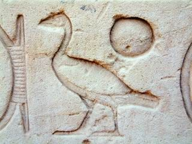

Un nom au sens chargé
« Pharaon », voilà un mot qui réveille un lointain passé endormi sous la poussière du temps, un nom qui naît à l’époque des pyramides lorsque se structure l’administration pharaonique. Il faut faire un peu de science pour comprendre pourquoi ce nom commun finit par revêtir un statut de nom propre.
Les Grecs prononçaient, à la manière des Égyptiens du Nord, pharaô le nom qui désignait officiellement les titulaires de l’office de roi du Double-Pays, en d’autres termes les héritiers terrestres d’Horus. En fait, Pharaô (Phar-aô) est la prononciation de l’égyptien P(h)er-âa (ou Per-aô), qui désignait la « Grande-Maison », c’est-à-dire le palais royal, que mentionnent les officiers royaux de l’Ancien Empire dans leurs titulatures. Mais, en grec, on dit également Pharaôn, forme corrompue de Pharaô, et la signification n’est pas douteuse, car Flavius Josèphe, auteur juif du Ier siècle de notre ère rappelle : « Pharaôn, selon les Égyptiens, signifie "roi". »
Avec le temps, par métonymie, le siège de l’Institution royale, les bureaux du palais, avaient fini par se confondre avec l’institution elle-même. C’est un peu comme si l’on disait « L’Élysée » pour désigner le chef de l’État, « le Quai (d’Orsay) » dans les milieux diplomatiques, le Vatican pour la papauté, voire la « Sublime Porte » jadis pour désigner le gouvernement ottoman. Le palais royal devient le roi régnant, à telle enseigne qu’il est toujours suivi des souhaits « Vie, Prospérité, Santé ».
D’ailleurs, à l’époque tardive, au lieu de dire « le Roi de Haute et de Basse-Égypte » Untel, comme cela était le cas dans les époques classiques, P(h)er-âa accompagne le nom royal, et finit par composer un tout indissociable. Le roi Amenemhat III, roi divinisé de la XIIe dynastie, sous son nom d’intronisation, Nymaâtrê, répondait au nom de Porramanrès dans le Fayoum à l’époque grecque. Ce n’est cependant qu’à partir de la XXIIe dynastie, que l’on précise « Pharaon, Vie, Prospérité, Santé, Untel ». Il se trouve que lorsque la fonction de roi d’Égypte perd de sa notoriété avec la valse rapide des empereurs de l’époque tardive, les prêtres d’Égypte finiront par remplacer le nom de l’Empereur, qu’ils ne connaissent plus, par le mot P(h)er-âa dans un cartouche. Il devient ainsi peu à peu un nom propre.
Mais le même nom a une histoire biblique puisque, dans le Pentateuque, aucun souverain d’Égypte n’est nommé si ce n’est par le nom Pharaon, hébraïsé, Pare’ôh. Ainsi, Abraham, Joseph, Moïse ont à faire à cet être que l’on ne nomme pas et qui est connoté péjorativement, avant que l’on ne mentionne, dans le Livre des Rois, conformément à la tradition égyptienne, les noms de Sésac (Chéchanq), Nékao et Hophra (Apriès), précédé du titre de Pharaon.
C’est ce nom, au sens chargé, qui a été importé dans le vocabulaire philosophique pour revêtir le sens de « tyran », eu égard au sort des Hébreux dans le désert, poursuivis par l’armée égyptienne. Aujourd’hui, si « pharaon » désigne un souverain d’Égypte sans connotation particulière, « Pharaon », comme nom propre, relève tout à la fois d’un passé de prestige, de sortilège et de mystère. Car, derrière le nom Pharaon se cache un être d’autant plus mystérieux qu’il n’est pas nommé, sorcier à ses heures.

Le nom de Sa-Rê
Le titre qualifie le roi de « fils de Rê » et, en indiquant sa filiation divine, le rattache charnellement au dieu-soleil. Il est constitué de l’hiéroglyphe du canard, qui signifie fils, et de celui du soleil (Rê), et est suivi du nom de naissance de pharaon inscrit dans un cartouche.
Exemples :
- Amenhotep III : « sa ra imen hetep heqa Ouaset » (Fils de Rê, Amon est satisfait, prince de Thèbes)
- Toutânkhamon : « sa ra tout ankh imen heqa iounou shemaou » (Fils de Rê, image vivante d’Amon, Souverain de l’Héliopolis du sud)
- Nekhtnebef Ier : « sa ra nekhet nebef » (Fils de Rê, puissant est son Seigneur)
C’est à partir de Khéphren que les deux derniers noms sont inscrits dans un cartouche, le Shenou dont le nom est formé à partir d’un verbe signifiant entourer, encercler. Il s’agit d’une cordelette en forme d’ovale, nouée à l’une des extrémités et qui symbolise sans doute ce que le soleil encercle : pharaon se proclame maître de l’univers.